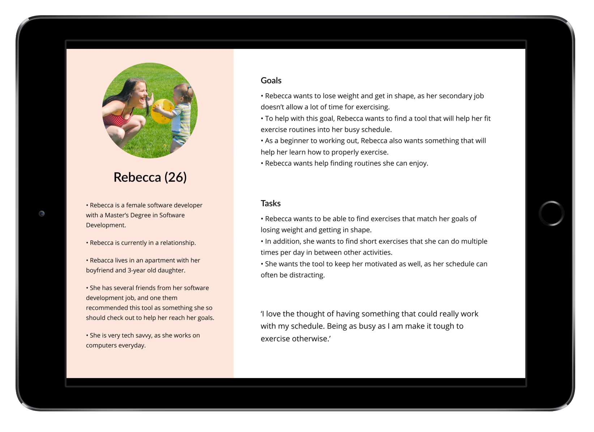
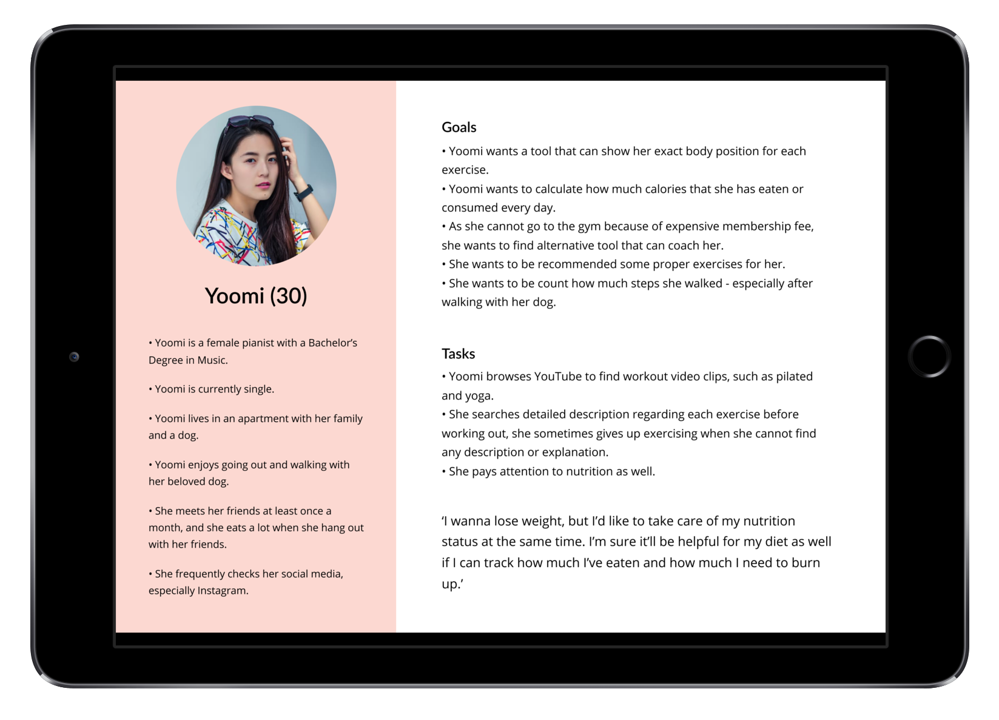
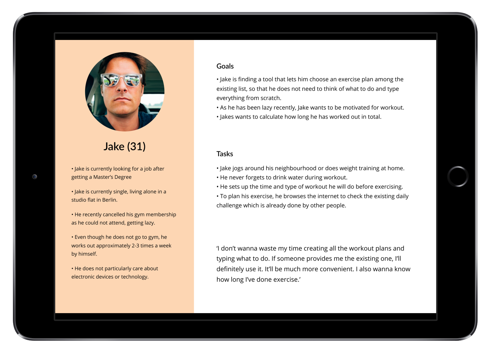

FitJet: Case Study
1. Overview
- My Role: UX/UI Designer (from user research to final UI design)
- Timeline: May 2018 - July 2018 (2 months in total)
FitJet is a responsive web application which helps users find suitable exercises and stay fit. This is a project which was conducted as a part of UI for UX Designers course at CareerFoundry. Herein, I covered the whole UX and UI design process - from user research to final UI design.
2. User Research
In UI for UX designers course, user research result, including one persona, and main features of the application are provided by CareerFoundry beforehand. However, to listen to real users who exercise or use fitness applications, I did extra user research before moving onto user flow creation and wireframing. Especially, as a person who has tried to lose weight and be fitted using applications and video tutorials, not going to gym, before, I wanted to make the product as useful as possible - by gathering more opinions and insights. Thus, I interviewed 3 people and conducted user survey which was answered by 23 respondents.

Through the research process, I could gather the following insights:
- Users want to know how long they have worked out.
- Users want to check the how many calories they have eaten and need to consume.
- Users want a description of each exercise by coaching or video tutorials.
- Users want to be provided with exercising plans, routines or daily challenges within the application so that they do not need to make the plans by themselves from scratch.
3. User Personas
Based on the insights gathered by user research, I created 2 more personas with the one(herein Rebecca) provided by CareerFoundry. I could check and anticipate how the users will think and behave whilst exercising, and what they will want from the application I will make.
  4. User Journey Maps
Also, to check the detailed behaviours and thinking of each persona, I created user journey maps. I could look back on the personas' goals once again in this process, and find out opportunities which can be added to the application.


Exercise scheduler (based on exercise interests and actual daily routine: commute, sit at desk, etc.)After creating all the materials, I fixed the features of applications - which will be added to the existing features provided by CareerFoundry. Firstly, the provided features are as follows:
- Search and filter exercise videos (based on type, difficulty level, length, etc.)
- Exercise scheduler (based on exercise interests and actual daily routine: commute, sit at desk, etc.)
- Option to add sessions to the calendar
- Create user accounts
- Tracking and charting of users’ progression over time
- A game layer with individual daily challenges, achievements, and/or rewards
- Social sharing for routines or favourite exercises
Here, I added the following features based on the whole user research results and related materials that I created:
- Choice of exercise based on categories
- Calorie intake and consumption record
- Height and weight record
- Timer and stopwatch
- Detailed workout tutorials both by video clips and photos
- Providing daily challenge lists for users' convenience
- Letting users set up how many calories they would like to consume and how many calories they need to spend per a day to achieve their goals
- Notification to drink water
5. User Flows
After setting up the features, I made user flows of each persona to see the steps that the users will need to take to achieve their goals. The flow creation process was also helpful to think of ways to categorise and place each feature.